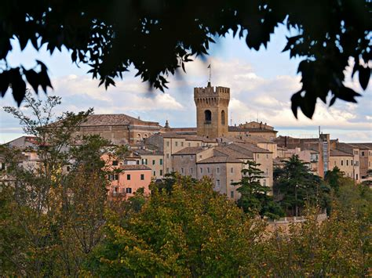

Marche
Overview
Marche is a central Italian region located between the Apennines and the Adriatic Sea, known for its natural landscapes, historic towns, and sandy beaches. The region is famous for its craftsmanship, cultural traditions, and a cuisine that highlights fresh local products. It offers a perfect blend of mountains, sea, and art.
Quick Facts
- Capital: Ancona
- Regional Language/Dialect: Italian
- Population: ~1.5 million
- Famous for: Adriatic beaches, craftsmanship, mountain landscapes
- Fun Fact: Marche hosts numerous historic theaters and a rich musical heritage!
Typical Dishes
Vincisgrassi

Brodetto

Olive all’Ascolana

Ciauscolo

Famous Places
Ancona

Urbino

Loreto

Monti Sibillini National Park

Recanati

Best Time to Visit
The best time to visit Marche is spring (April to June) and autumn (September to October), when the weather is mild and pleasant, perfect for exploring cities, mountains, and coastlines. Summer can be hot and crowded on the beaches, while winter is quieter but cool.
Regional Symbols
- Flag:
- Coat of arms: